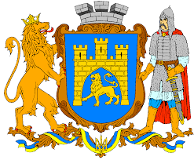
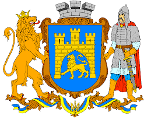

Головна Про Львів Галерея Відео Екскурсії
Про Львів
Львів — місто обласного значення в Україні, адміністративний центр Львівської області, Львівської агломерації, Львівського району, Львівської міської громади, національно-культурний та освітньо-науковий осередок країни, великий промисловий центр і транспортний вузол, вважається столицею Галичини та центром Західної України. За кількістю населення — сьоме місто країни (станом на 1 липня 2021 року у Львові проживало 717 486 осіб).
Львів заснував король Данило приблизно у 1231—1235 роках (перша згадка від 1256 року). Близько 1272 року місто стало столицею Королівства Русі (Галицько-Волинського князівства). Невдовзі після смерті князя Юрія II Львів на понад чотири століття опинився під владою Королівства Польського. 1356 року місто отримало маґдебурзьке право; в добу Середньовіччя Львів був важливим торговельним центром. За австрійського панування місто стало осередком українського та польського національного рухів. Після розпаду Австро-Угорщини восени 1918 року Львів деякий час був столицею Західноукраїнської Народної Республіки, але після українсько-польської битви за місто в листопаді 1918 перейшов до Польщі, що в 1922-23 було визнано міжнародними пактами та угодами. Під час Другої світової війни місто захопив Радянський Союз, а згодом — Німеччина. Після війни було юридично закріплено ялтинську угоду 1945, за якою Східна Галичина і зокрема Львів лишався у складі Української РСР. 1946 року між Польщею та УРСР відбувся обмін населення, який разом із наслідками війни суттєво вплинув на населення Львова. З 1991 року Львів перебуває у складі України.
Символіка
Офіційно затвердженими символами Львова є герб, великий герб, хоругва Львівської міської ради та логотип. Статут Львова символами міста визначає також назви чи зображення архітектурних та історичних пам'яток.
До основи сучасного герба Львова покладено герб із печатки міста з середини XIV ст. — кам'яна брама з трьома вежами, в отворі воріт якої крокує золотий лев. Великий герб Львова — це щит із гербом міста, увінчаний срібною міською короною з трьома зубцями, який тримають лев і давньоруський воїн. Прапором Львова є синє квадратне полотнище з зображенням міського герба, обрамлене лиштвою, що складається з жовтих та синіх рівнобедрених трикутників по краях. Логотипом Львова є зображення п'яти різнобарвних веж (зліва — направо): дзвіниці Вірменського собору, вежі Корнякта, міської ратуші, вежі Латинської катедри, дзвіниці монастиря Бернардинів та слоган «Львів відкритий для світу» під ними.
Де-факто девізом Львова сьогодні є гасло «Львів відкритий для світу», адже воно зображене на логотипі міста. На гербі 1936—1939 років як девіз використовувався латинський вислів «Semper fidelis» (Завжди вірний), проте після Другої світової війни він більше не вживався.
З XVII століття патроном Львова вважався святий Ян з Дуклі. Сьогодні заступником міста є святий Юрій Змієборець. До дня його пам'яті, у першу неділю травня, відзначається День міста. Серед шанованих львів'янами міських свят також День прапора (3 квітня; на згадку про 3 квітня 1990 року, коли за 16 місяців до проголошення незалежності України на львівській ратуші було піднято синьо-жовтий прапор) та День Листопадового чину (1 листопада; в пам'ять про Листопадовий чин, коли в ніч на 1 листопада 1918 року у Львові було встановлено Західноукраїнську Народну Республіку). 27 липня у Львові день жалоби за жертвами Скнилівської трагедії.
Львів отримував орден «За військову доброчесність», найвищу військову нагороду Польщі, та Орден Леніна, найвищу нагороду Радянського Союзу.

 

Географія
Львів розміщений у центральній частині Львівської області між Яворівським, Жовківським та Пустомитівським районами, у східноєвропейському часовому поясі на 24 меридіані; місцевий час відстає від поясного на 24 хвилини. Площа міста в адміністративних межах 2012 року становить близько 182 км².
Місто лежить на відстані бл. 70 км[12] від кордону з Польщею, на стику Львівського плато, горбкуватого Розточчя і низинної Надбужанської котловини. Через нього проходить пасмо пагорбів Головного європейського вододілу, який розмежовує річки Балтійського та Чорноморського басейнів (відповідно річок Західного Бугу та Дністра). Середня висота Львова над рівнем моря — 289 метрів. Найвища точка міста — гора Високий замок (413 м над рівнем моря). Історично Львів було збудовано на річці Полтві (притока Бугу), але в XIX столітті її пустили через головний міський колектор (під проспектами Шевченка, Свободи та Чорновола).
Горішня частина Стрийського парку (2009)
Львів має понад 20 парків і зелених зон, 2 ботанічні сади і 16 пам'яток природи. Два парки є пам'ятками садово-паркового мистецтва національного значення, один — місцевого. У міських межах розташований регіональний ландшафтний парк «Знесіння» — природоохоронна територія площею понад 300 га, яка має максимально наближену до природних умов екосистему.
У межах міста поширені верхньокрейдові, верхньоміоценові і четвертинні відклади:
Верхньокрейдові відклади представлені товщею маастрихтських світло-коричневих мергелів, потужністю близько 50 м. Ці відклади є регіональним водотривом.
Верхньоміоценові відклади представлені (знизу догори): миколаївськими пісками і пісковиками, товщею літотамнієвих вапняків із пропластками гіпсів. Ці відклади незгідно залягають на верхньокрейдових і переважно розвинуті на головному вододілі. Потужність верхньоміоценових відкладів сильно змінюється, а у багатьох місцях ці відклади повністю знищені дочетвертинною ерозією.
Четвертинні відклади представлені переважно дольдовиковим лесом, пісками, травертинами і постльодовиковими болотними суглинками і торфовищами в районі Білогорщі і долині Полтви.
Вверх⇪